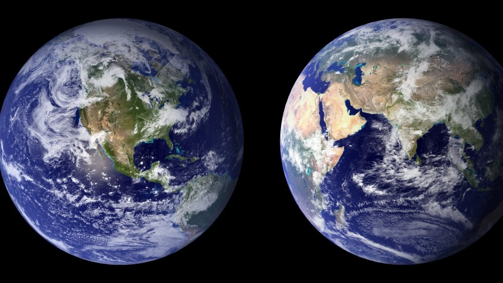
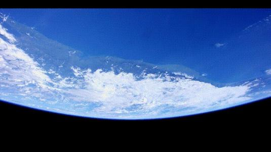
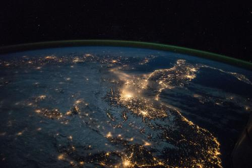
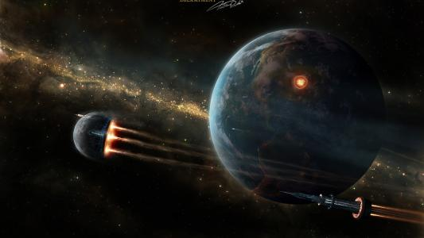
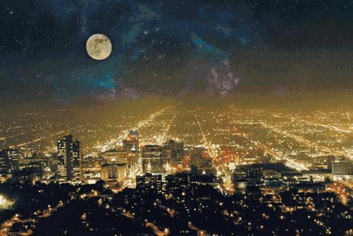

地球相关知识
地球（Earth）是太阳系八大行星之一，按离太阳由近及远的次序排为第三颗，也是太阳系中直径、质量和密度最大的类地行星，距离太阳1.5亿公里。地球自西向东自转，同时围绕太阳公转。现有40亿～46亿岁， [1] 它有一个天然卫星——月球，二者组成一个天体系统——地月系统。46亿年以前起源于原始太阳星云。
地球赤道半径6378.137千米，极半径6356.752千米，平均半径约6371千米，赤道周长大约为40076千米，呈两极稍扁赤道略鼓的不规则的椭圆球体。地球表面积5.1亿平方公里，其中71%为海洋，29%为陆地，在太空上看地球呈蓝色。
地球内部有地核、地幔、地壳结构，地球外部有水圈、大气圈以及磁场。地球是目前宇宙中人类已知存在生命的唯一天体，是包括人类在内上百万种生物的家园。
诞生和演化
第一阶段为地球圈层形成时期，其时限大致距今4600至4200Ma。46亿年前诞生时候的地球与21世纪的大不相同。根据科学家推断，地球形成之初是一个由炽热液体物质（主要为岩浆）组成的炽热的球。随着时间的推移，地表的温度不断下降，固态的地核逐渐形成。密度大的物质向地心移动，密度小的物质（岩石等）浮在地球表面，这就形成了一个表面主要由岩石组成的地球。
第二阶段为太古宙、元古宙时期。其时限距今4200至543Ma。地球自不间断地向外释放能量，由高温岩浆不断喷发释放的水蒸气，二氧化碳等气体构成了非常稀薄的早期大气层——原始大气。随着原始大气中的水蒸气的不断增多，越来越多的水蒸气凝结成小水滴，再汇聚成雨水落入地表。就这样，原始的海洋形成了。
第三阶段为显生宙时期，其时限由543Ma至今。显生宙延续的时间相对短暂，但这一时期生物及其繁盛，地质演化十分迅速，地质作用丰富多彩，加之地质体遍布全球各地，广泛保存，可以极好的对其进行观察和研究，为地质科学的主要研究对象，并建立起了地质学的基本理论和基础知识。
地质时期
在地球演化过程中，发生一些天文与地质事件，将事件的时间段叫做地质时期。
在各地质时期，在与地球相关的宇宙空间及太阳系和地球所发生的大事件，在地球自身、地壳运动、地层、岩石、构造、古生物、古地磁、冰川、古气候等多方面都留下了记录。
在不同的地质时期，地质作用不同，特征不同。
地理特征
质量
卡文迪许认为地球的质量约为5.96×10^24千克，地球的赤道 半径ra=6378137m≈6378km，极半径rb=6356752m≈6357km，扁率e=1/298.257，忽略地球非球形对称，平均半径r=6371km。在赤道某海平面处重力加速度的值ga=9.780m/s^2，在北极某海平面处的重力加速度的值gb=9.832m/s^2，全球通用的重力加速度标准值g=9.807m/s^2，地球自转周期为23小时56分4秒（恒星日），即T=8.616×10^4s。
温度
地球表面的气温受到太阳辐射的影响，全球地表平均气温约15℃左右。而在不见阳光的地下深处，温度则主要受地热的影响，随深度的增加而增加。在地球中心处的地核温度更高达6000℃以上，比太阳光球表面温度（5778K，5500℃）更高。地球表面最热的地方出现在巴士拉，最高气温为58.8℃。地球北半球的“冷极”在东西伯利亚山地的奥伊米亚康，1961年1月的最低温度是-71℃。世界的“冷极”在南极大陆，1967年初，俄罗斯人在东方站曾经记录到-89.2℃的最低温度。
电性
因为地球自西向东旋转，而地磁场外部是从磁北极指向磁南极（即南极指向北极），所成的环形电流与地球自转的方向相反，所以是带负电的。
形状
月食时，仔细观察就会发现投射在月球上的地球影子总是圆的；往南或往北作长途旅行时，则会发现同一个星星在天空中的高度是不一样的。一些聪明的古人从诸如此类的蛛丝马迹中就已经猜) 测到地球可能是球形的。托勒密的地心说也明确地描述了地球为球形的观点，但是直到16世纪葡萄牙航海家麦哲伦的船队完成人类历史上的第一次环球航行，才真正用实践无可辩驳地证明了地球是个球体。
科学家经过长期的精密测量，发现地球并不是一个规则球体，而是一个两极部位略扁赤道稍鼓的不规则椭圆球体，夸张地说，有点像“梨子”，称之为“梨形体”。地球的赤道半径约长6378.137km，这点差别与地球的平均半径相比，十分微小，从宇宙空间看地球，仍可将它视为一个规则球体。如果按照这个比例制作一个半径为1米的地球仪，那么赤道半径仅仅比极半径长了大约3毫米，凭着人的肉眼是难以察觉出来的，因此在制作地球仪时总是将它做成规则球体。
位置
球在宇宙中的位置在最近的一个世纪里，这一认识发生了根本性的拓展。起初，地球被认为是宇宙的中心，而当时对宇宙的认识只包括那些肉眼可见的行星和天球上看似固定不变的恒星。17世纪日心说被广泛接受，其后威廉·赫歇尔和其他天文学家通过观测发现太阳位于一个由恒星构成的盘状星系中。到了20世纪，对螺旋状星云的观测显示我们的银河系只是膨胀宇宙中的数十亿计的星系中的一个。到了21世纪，可观测 宇宙的整体结构开始变得明朗——超星系团构成了包含大尺度纤维和空洞的巨大的网状结构。超星系团、大尺度纤维状结构和空洞可能是宇宙中存在的最大的相干结构。在更大的尺度上（十亿秒差距以上）宇宙是均匀的，也就是说其各个部分平均有着相同的密度、组分和结构
宇宙是没有“中心”或者“边界”的，因此我们无法标出地球在整个宇宙中的绝对位置。地球位于可观测宇宙的中心，这是因为可观测性是由到地球的距离决定的。在各种尺度上，我们可以以特定的结构作为参照系来给出地球的相对位置。目前依然无法确定宇宙是否是无穷的。
地形与气候
气候
因为地球气候从亘古到现在都有发生巨大变化并且这种变化将继续演进，很难把地球气候概括。地球上与天 气和气候有关的自然灾害包括龙卷风、台风、洪水、干旱等。
两极地气候被两个温度相差并非很大的区域分隔开来：赤道附近宽广的热带气候和稍高纬度上的亚热带气候，降水模式在不同地区也差异巨大，降水量从一年几米到一年少于一毫米的地区都有。
地貌
地球总面积约为5.10072亿平方千米，其中约29.2%（1.4894亿平方千米）是陆地，其余70.8%（3.61132亿平方千米）是水。陆地主要在北半球，有五个大陆：欧亚大陆、非洲大陆、美洲大陆、澳大利亚大陆和南极大陆，另个还有很多岛屿。大洋则包括太平洋、大西洋、印度洋、北冰洋和南冰洋五个大洋及其附属海域。海岸线共35.6万千米。
人文地理
人口
世界人口总数是人类在一个特定的时间内在地球上生活的数目。根据美国人口调查局的估计，截至2013年1月4日，全世界约有70.58亿人。世界人口在15世纪的黑死病后不断增长，最快的世界人口增长率（高于1.8%）出现于20世纪50年代。根据世界人口预测，世界人口将继续增长直到2050年。
政区
世界上共有226个国家和地区，国家199个，地区27个。亚洲（48个国家），欧洲（44个国家/2个地区），非洲（53个国家/3个地区），大洋洲（14个国家/10个地区），北美洲（23个国家/13个地区），南美洲（12个国家/1个地区）。
地球年龄
21世纪科学家对地球的年龄再次进行了确认，认为地球产生要远远晚于太阳系产生的时间，跨度约为1.5亿年左右，这远远晚于此前认为的30万～4500万年。此前科学家通过太阳系年龄计算公式算出了太阳系产生的时间为55.68亿年前，而地球产生的年龄要比太阳系晚30亿年到45亿年左右，大约为25.48亿年前左右。在2007年时，瑞士的科学家对此数据进行了修正，认为地球的产生要在太阳系形成的6200万年之后。
科学家一般是通过同位元素铪182和钨182两种放射元素来计算地球和月球年龄的。铪182的衰变期为900万年衰变之后的同位素为钨182，而钨182则是地核的组成部分之一。

科学家们认为在地球形成时，几乎所有的铪182元素全部已经衰变成了钨182。仅有极少量存在，正是这微量的铪182才能够帮助科学家测算地球的真实年龄。尼尔斯研究所的教授说道：“所有的铪完全衰变成钨需要50亿～60亿年的时间，并且都会沉在地核，而新的表明，地球和月球上地幔含有的元素量高于太阳系，而经过测算时间大约为1.5亿年。”
地球卫星
地球有一个卫星月球，月球俗称月亮，也称太阴。在太阳系中是地球唯一的天然卫星。月球是最明显的天然卫星的例子。在太阳系里，除水星和金星外，其他行星里面都有天然卫星。月球直径约3476 公里，是地球的1/4。体积只有地球的1/49，质量约7350亿亿吨，相当于地球质量的1/81，月球表面的重力差不多是地球重力的1/6。
